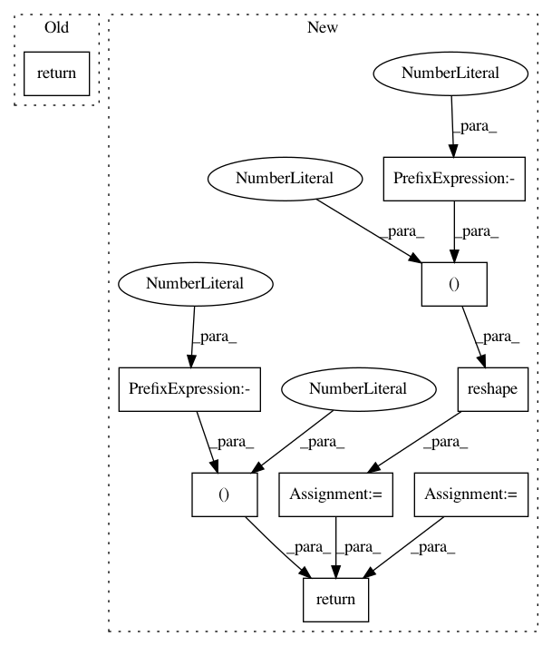

945fd5534c8903f928084a14e494cc00b0d6c040,keras_rcnn/layers/losses/_rpn.py,RPN,call,#RPN#Any#,15
Before Change
self.add_loss(loss)
return scores_output
def compute_classification_loss(self, output, target):
pass
After Change
def call(self, inputs, **kwargs):
output_bounding_boxes, target_bounding_boxes, output_scores, target_scores = inputs
output_scores = keras.backend.reshape(output_scores, (1, -1))
classification_loss = self.compute_classification_loss(output_scores, target_scores)
output_bounding_boxes = keras.backend.reshape(output_bounding_boxes, (1, -1, 4))
regression_loss = self.compute_regression_loss(output_bounding_boxes, target_bounding_boxes, output_scores)
loss = classification_loss + regression_loss
self.add_loss(loss)
return [output_bounding_boxes, output_scores]
@staticmethod
def compute_classification_loss(output, target):
condition = keras.backend.not_equal(target, -1)
In pattern: SUPERPATTERN
Frequency: 4
Non-data size: 9
Instances
Project Name: broadinstitute/keras-rcnn
Commit Name: 945fd5534c8903f928084a14e494cc00b0d6c040
Time: 2017-11-14
Author: allen.goodman@icloud.com
File Name: keras_rcnn/layers/losses/_rpn.py
Class Name: RPN
Method Name: call
Project Name: AIRLab-POLIMI/mushroom
Commit Name: 32cf78d9b668f197318b7ac7e2403506f7a167e6
Time: 2020-05-13
Author: joao.ac.carvalho@gmail.com
File Name: mushroom_rl/solvers/lqr.py
Class Name:
Method Name: compute_lqr_Q
Project Name: fizyr/keras-retinanet
Commit Name: 0996e093b409cc38a54a9fdb78a9a09f37f7327b
Time: 2017-09-11
Author: j.c.gaiser@delftrobotics.com
File Name: keras_retinanet/layers/_focal_loss.py
Class Name: FocalLoss
Method Name: call
Project Name: AIRLab-POLIMI/mushroom
Commit Name: 32cf78d9b668f197318b7ac7e2403506f7a167e6
Time: 2020-05-13
Author: joao.ac.carvalho@gmail.com
File Name: mushroom_rl/solvers/lqr.py
Class Name:
Method Name: compute_lqr_V